注文前に、前回のメモをすぐ確認できるか。
2026-10-06 / アプリ 0.1.0 / 評価 v1.1| 課題 | 改善後の動作 |
|---|---|
| ND-005 / 検索 | 料理結果に名前・該当メモ・店名と支店を表示し、1タップで詳細へ進む。次回メモだけでなく、過去の注文条件も検索し、該当する履歴を最初に表示する。 |
| ND-006 / 一覧 | 登録済みホームと候補の大きな説明を省いた。店舗絞り込みと並び順は通常文字で横並び、幅が足りない場合と大きな文字で縦に再配置する。 |
| ND-007 / 入力 | 入力済みでも注文条件・価格（円）の項目名を表示する。新規注文で引き継ぐ価格は元の来店日と金額を案内し、今回の価格の確認を促す。変更後は前回値を引き継いでいると表示しない。 |
| ND-008 / アイコン | 「皿＋しおり」に簡略化し、次回の注文を覚える意味を加えた。通常・暗色・着色用の3素材をAsset Catalogへ登録。固有性・識別性の実ユーザー評価は今後行う。 |
| ND-009 / 履歴 | 「編集」を明示し、削除をその他メニューへ移した。確認前の削除は行わず、過去履歴の訂正で次回メモを上書きしない。 |
| ND-010 / 大きな文字 | 固定操作を「注文を記録」と短縮し、文字サイズを縮めずに高さを抑える。300文字メモと4件の履歴を使って読み進める操作・履歴編集・固定ボタンの到達を確認した。 |
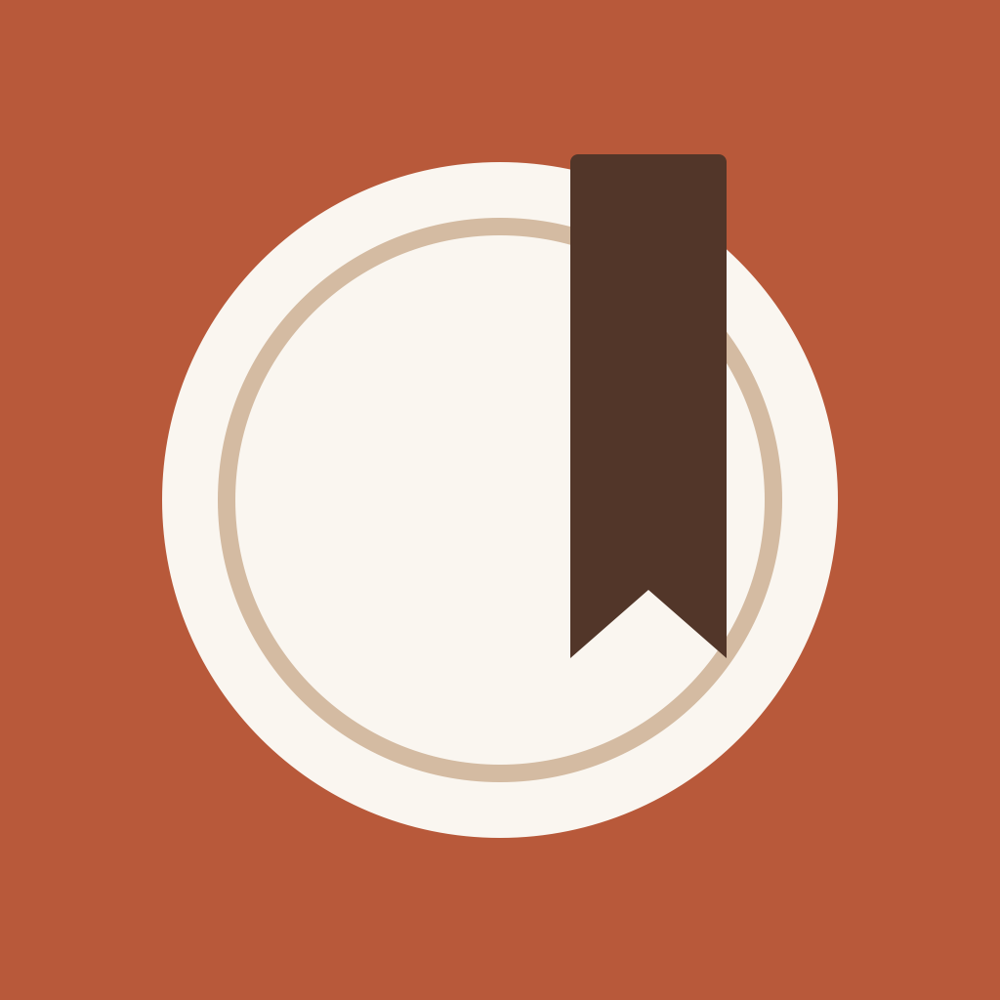
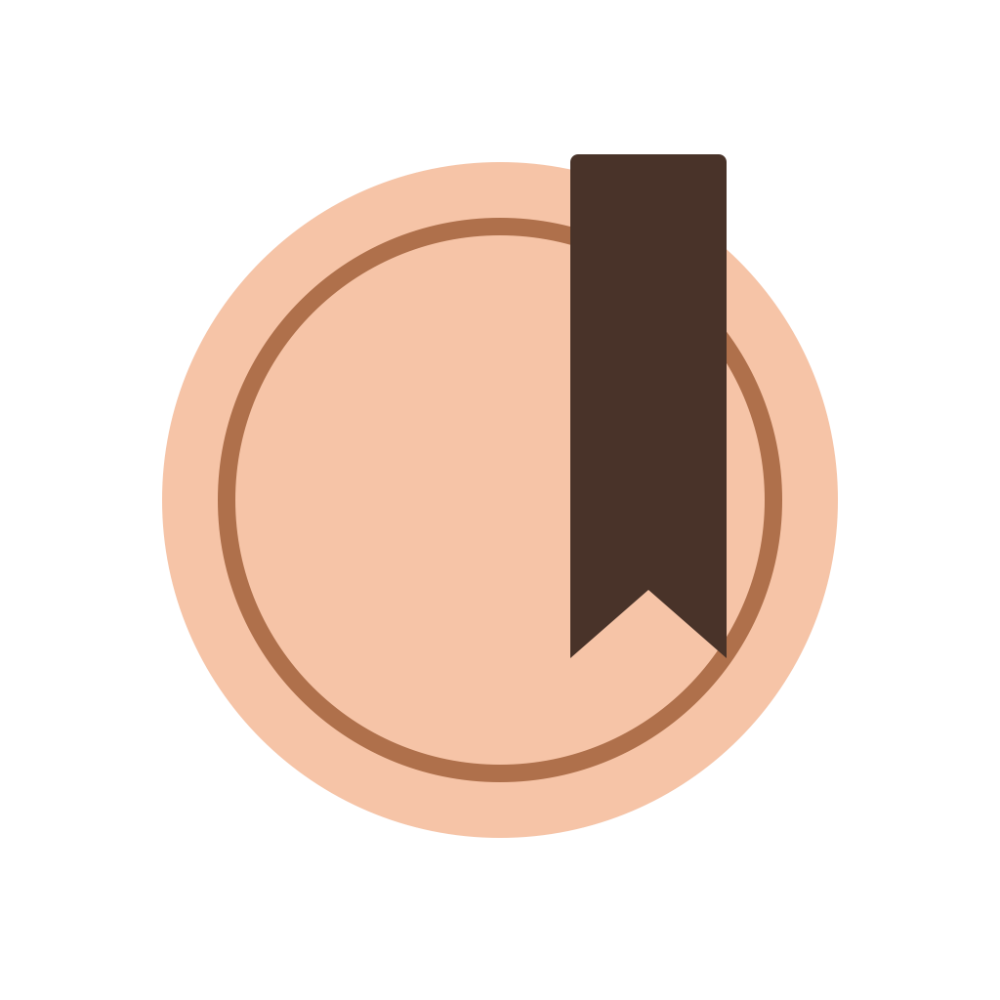
3素材とも1024×1024。通常版は不透明、暗色・着色用は透明背景。着色用素材はグレースケールで、実際の色は端末が適用する。ビルド済みAssets.carに通常・UIAppearanceDark・ISAppearanceTintableの3素材が含まれることを確認した。表示サイズと背景はHTML上の比較用で、iOSホーム画面の実際の表示とは異なる。設定はAppleのAsset Catalogによるアイコン設定を参照した。
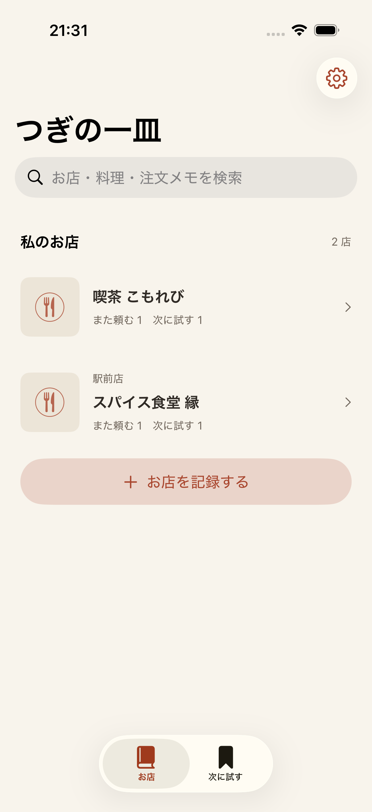
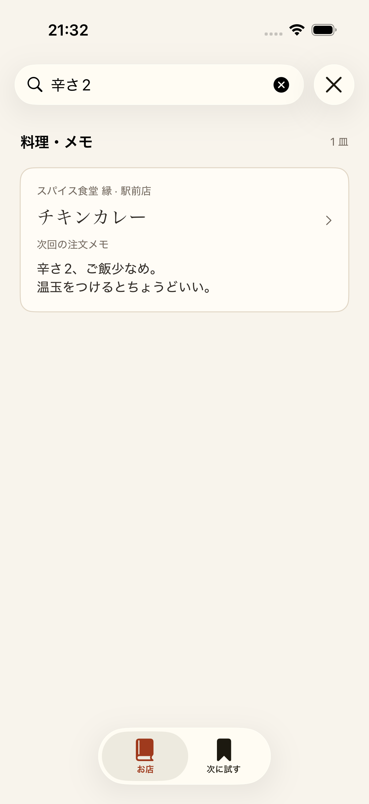
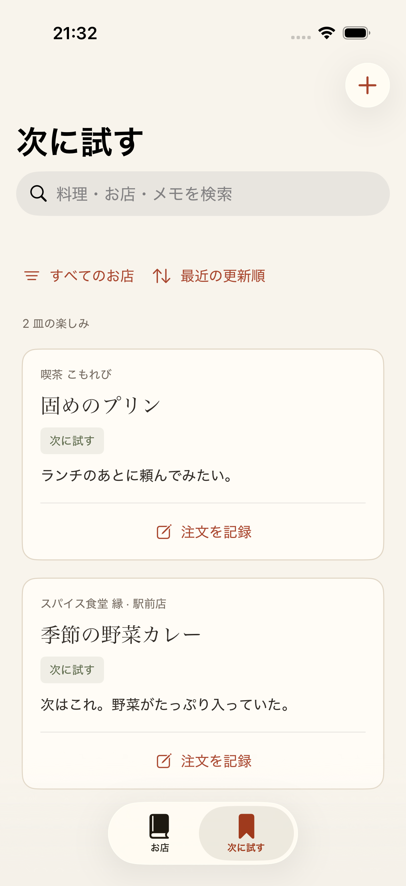
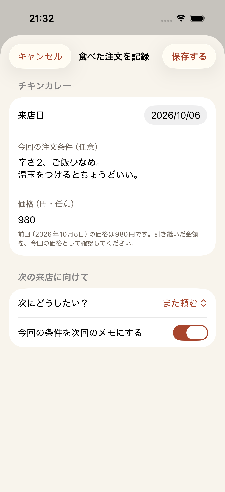
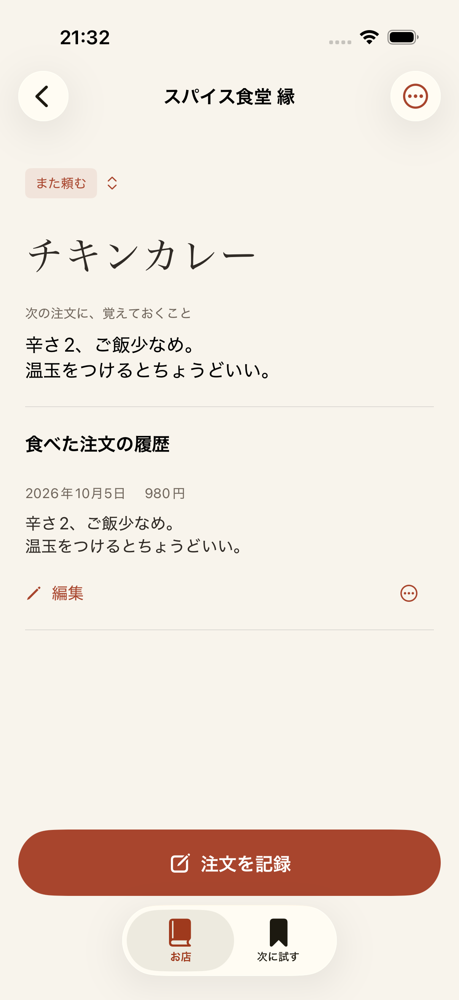
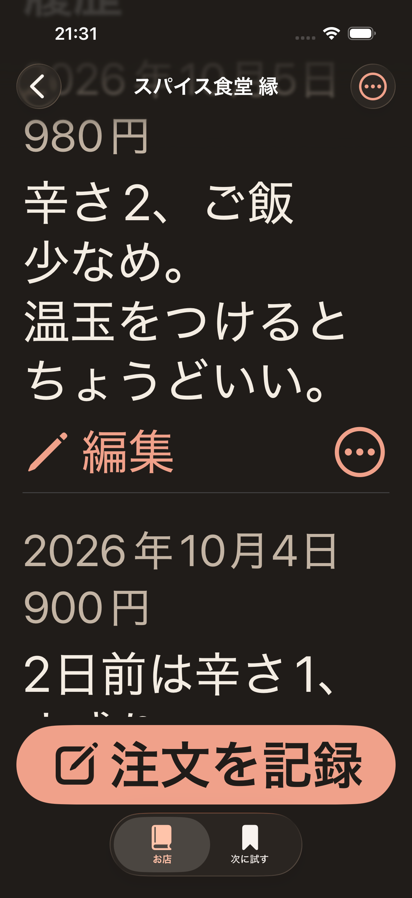
ビルドと単体46件・UI14件の操作を検証。全体の初回実行は59/60件成功し、削除確認の取り消し1件で失敗したため、明示的なキャンセル付きアラートへ修正した。修正後の関連UI5件（操作4件・撮影1件）は全て成功、失敗・スキップ0件。結果はUIUXImprovementValidation.xcresultとUIUXImprovementFinal.xcresultに保存。
通常の候補2皿は、スクロールする前の画面で両方のメモと記録操作を確認できた。辛さ2の検索結果では該当メモをそのまま読め、料理詳細までのタップ数は1回。最大文字の固定ボタンは1行で表示され、高さ120pt未満で操作できた。これはサンプルとシミュレーターによる確認で、実ユーザーの所要時間を測った値ではない。
300文字メモの表示 · 最大文字の候補一覧 · お店詳細 · 設定
NextDish専用シミュレーターのホーム画面で通常アイコンを確認した。端末のシステム外観だけを切り替えた撮影で、ホームのアイコン設定は通常表示のまま。暗色・着色専用素材の実際の切り替えは別途確認する。
| 素材 | 状況と確認 |
|---|---|
| アプリアイコン | 1024×1024の不透明PNGを作成済み。赤茶色の背景、皿、フォーク、ナイフ。Asset Catalogに登録し、ビルド済みInfo.plistのCFBundlePrimaryIconがAppIconを参照していることを確認。 |
| 画面内のアイコン | 検索・追加・編集・設定・状態の操作にはSF Symbolsを使用。写真なしの料理には皿とカトラリーの代替表示を用意。 |
| 配色と文字 | ライト／ダーク用の名前付きカラー、明朝の見出しとシステム本文。最小文字コントラスト5.11:1を既存の開発記録で確認。 |
| 実画面の画像 | 通常のホーム・候補一覧、ダーク／最大文字の候補と料理詳細を作成済み。今回の評価で検索・店舗詳細・注文フォーム・設定も撮影済み。 |
| 今後の素材 | アイコンの専用ダーク／着色バリエーション、ストア掲載用の説明付きスクリーンショットは未作成。起動画面は背景色のみの構成。 |
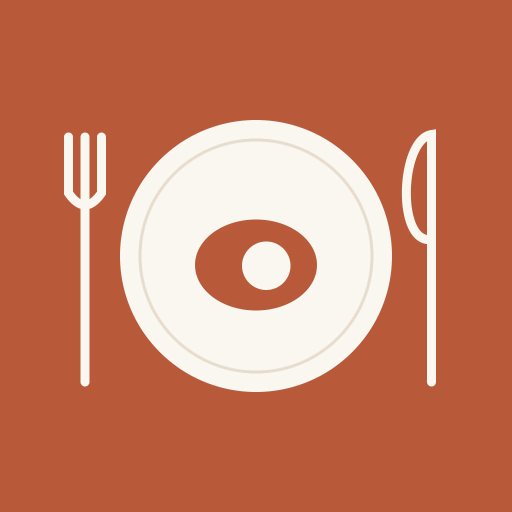
小さな表示でも「食事」は認識しやすく、アプリの暖かい配色と一致する。皿・カトラリーは汎用的な食事の記号で、「次回のために覚えておく」という価値の表現は弱い。皿としおりを中心にした構成を検討し、外周の細線と細部を整理する。上の画像はCSSによる縮小表示で、iOSのホーム画面での比較は別途必要。
実画面、SwiftUIの実装、既存テストの結果による点検。配色、情報の優先順位、検索、初回登録、再注文、編集・削除、最大文字サイズを対象にする。以下の評点は改善前の主観評価。実ユーザーの所要時間・操作成功率・継続率は未測定。実装の変更だけでは評点を引き上げず、実ユーザー検証で改めて判断する。
| 観点 | 評価 / 10 | 判断 |
|---|---|---|
| 視覚の統一感 | 8 | 暖色と明朝の見出しに一貫性。写真なしでも読みやすい。 |
| 再来店時の速さ | 6 | 説明と操作が料理より先に多く表示され、ホームの料理検索は店舗経由となる。 |
| 入力と誤操作への配慮 | 7 | 下書き・破棄確認・削除確認がある。前回価格の入力元と、編集操作の見つけやすさに改善余地。 |
| 初回登録 | 7 | 店名・料理名から登録できる。候補タブでも店舗から追加可能。最短の登録時間は実ユーザーで確認する。 |
| アクセシビリティ | 7 | ダーク・最大文字の主要導線が操作可能。長いメモを読む領域と、実機のVoiceOver検証が残る。 |
| アイコンの固有性 | 6 | 食事は伝わるが、注文の記憶という価値を強められる。 |
10は日常利用と実ユーザー検証まで十分に仕上がった状態、7は基本操作が成立して改善点が残る状態、5は中心となる操作に継続的な迷いがある状態として採点。総合判断は「体験検証に使える。再来店時の導線を優先して磨く」。
| 順 | 課題 | 確認した事実 | 改善案と確認条件 |
|---|---|---|---|
| 1 / ND-005 | 検索結果から料理へ進む導線 | 「辛さ2」で検索しても、結果に出るのは店舗。該当する料理名やメモは表示されない。店舗詳細で全料理を再確認する。 | 店舗結果に該当する料理とメモを出す。検索語を入力した後、該当する料理へ1回のタップで進めること。 |
| 2 / ND-006 | 一覧の上部の情報量 | 登録済みホームでも大きな説明カードを表示。候補一覧の説明・店舗メニュー・並び順が縦に並び、料理の表示位置が下がる。 | 登録後の説明を短くし、直近の料理や店舗を優先。通常文字では候補のメニューを1段に、大きい文字では縦に配置する。メモへ到達するスクロール回数を前後で比較する。 |
| 3 / ND-007 | 注文フォームの項目名と価格の入力元 | チキンカレーの新しい注文フォームには前回の980円が入力される。入力済みの欄は980だけが表示され、価格・円の項目名が消える。注文条件も入力済みでは項目名が表示されない。前回からの複製とは案内しない。 | 入力済みでも「今回の注文条件」「価格（円）」を表示し、前回の値から入力した場合は日付と由来を明示する。利用者が今回の価格だと確認できること。 |
| 4 / ND-008 | アイコンの固有性 | 現行のAssetは皿とカトラリーのPNG1種類。専用の暗色・着色版は未設定。 | 皿としおりなど、次回の注文を覚える意味を加えた案を比較。小さいサイズと各外観で判別できること。 |
| 5 / ND-009 | 履歴の操作の優先順位 | 各履歴の下に削除が常時表示される。編集は履歴の行をタップする操作で、行に編集の説明がない。 | 編集を明示し、削除は行のメニュー等へ移す。削除確認は維持し、編集と削除の入口を取り違えないこと。 |
| 6 / ND-010 | 最大文字の固定操作の大きさ | 最大文字では記録ボタンが2行に広がり、画面下部を大きく占める。現在の操作は成功するが、長いメモ・履歴を読む領域が狭い。 | 文字サイズを尊重しながら「注文を記録」など短いラベルを検討。300文字のメモと複数の履歴で読める領域・操作可能性を確認する。 |
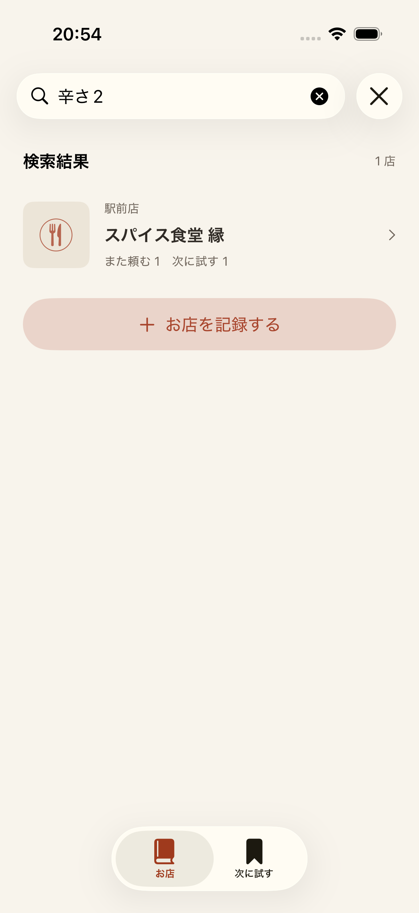
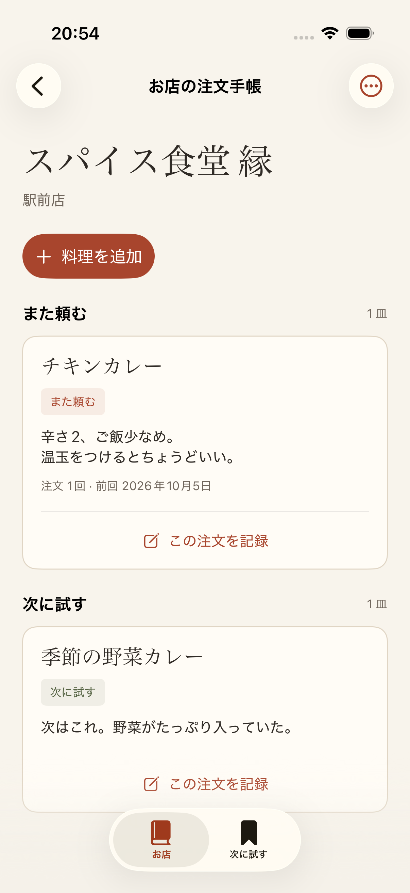
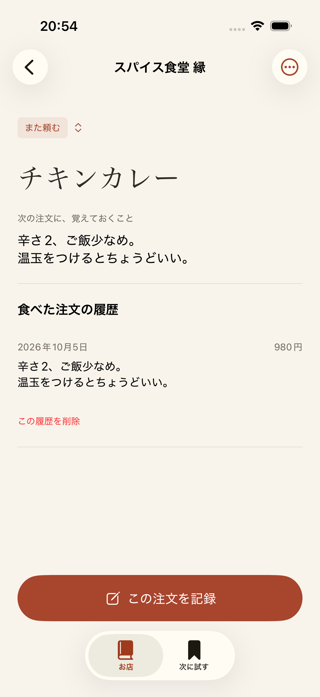
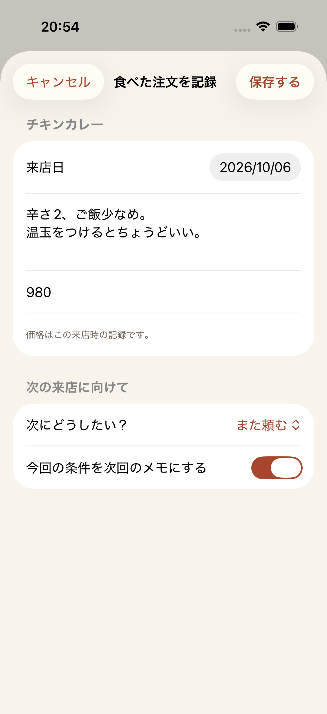
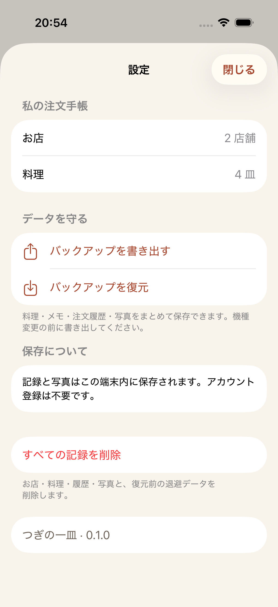
iPhone 17 / iOS 26.5の専用端末で、架空のサンプルを使って撮影。撮影用UIテスト1件が成功（失敗・スキップ0件）。結果：UIUXAuditFinal.xcresult。既存の機能確認はPolishValidation.xcresultの単体40件・UI9件が成功している。
| タスク | 記録するもの |
|---|---|
| 店名・料理名・メモから次の注文を確認する | 該当メモが読めるまでの時間、タップ数、スクロール数。 |
| 初回に一店・一皿を残す | 入力完了までの時間、状態の選択の迷い、未注文候補と履歴の理解。 |
| 再注文・価格変更を記録する | 前回の価格と今回の価格を区別できるか、保存後の確認。 |
| 大きな文字・VoiceOverでメモを読み、記録する | 300文字のメモ、複数履歴、文字の欠け、読み上げ順、各操作へ到達できるか。 |
| 版 | 日付 | 内容 |
|---|---|---|
| 1.1 | 2026-10-06 | 6件の改善内容、更新アイコン、改善後の実画面と検証結果を追加。改善前の評価と証拠を保持。 |
| 1.0 | 2026-10-06 | アイコンと素材の状況、実画面による評価、改善6件と検証条件を記録。 |